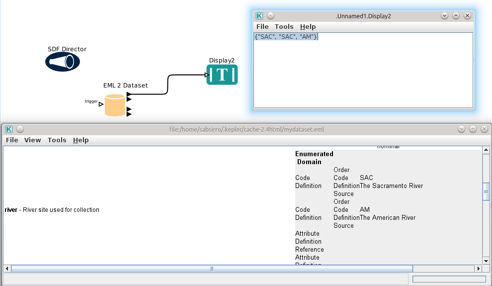
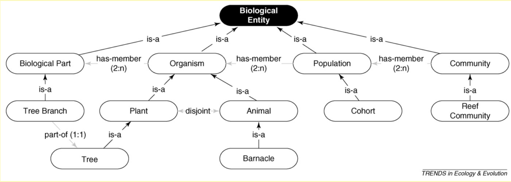
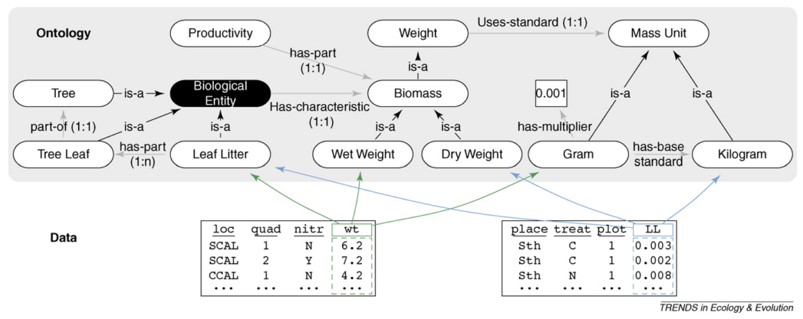
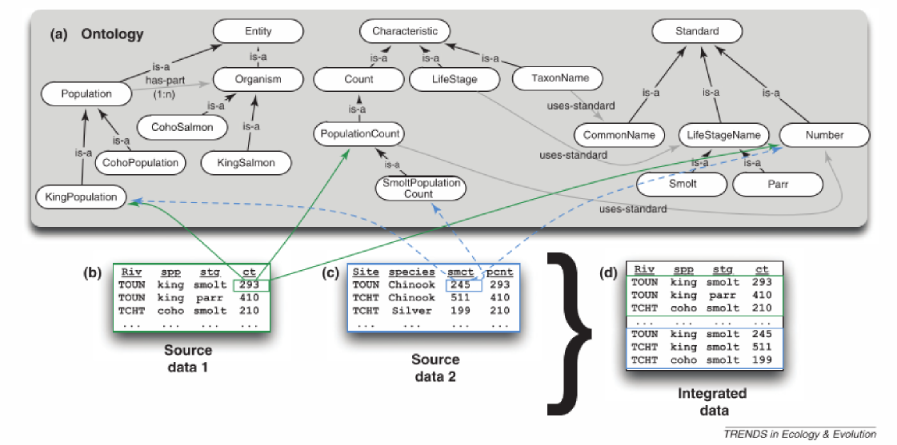
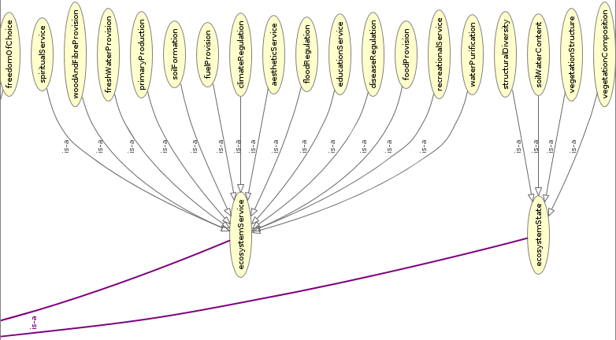

- Ecology
- collaborative
- cross-disciplinary
- data intensive
- syntheses
- complex questions
- spanning large scales (space/time)
Claas-Thido Pfaff
11.02.2014
Grimm et al. 1996
Deep integration of metadata
standards (vocabularies)
At rOpenSci (http://ropensci.org/)
What it can do by now (e.g.)
dat = data.set(river = c("SAC", "SAC", "AM"),
spp = c("king", "king", "ccho"),
stg = c("smolt", "parr", "smolt"),
ct = c(293, 410, 210),
col.defs = c("River site used for collection",
"Species common name",
"Life Stage",
"count of live fish in traps"),
unit.defs = list(c(SAC = "The Sacramento River",
AM = "The American River"),
c(king = "King Salmon",
ccho = "Coho Salmon"),
c(parr = "third life stage",
smolt = "fourth life stage"),
"number"))
data.frame(dat)
## river spp stg ct
## 1 SAC king smolt 293
## 2 SAC king parr 410
## 3 AM ccho smolt 210
attributes(dat)$col.defs
## [1] "River site used for collection" "Species common name"
## [3] "Life Stage" "count of live fish in traps"
eml_config(creator="Claas-Thido Pfaff <claas-thido.pfaff@uni-leipzig.de>")
eml_write(dat, file="mydataset.eml", title="My test dataset")
## [1] "mydataset.eml"
<creator>
<individualName>
<givenName>Claas-Thido</givenName>
<surName>Pfaff</surName>
</individualName>
<electronicMailAddress>claas-thido.pfaff@uni-leipzig.de</electronicMailAddress>
</creator> ...
</physical>
<attributeList>
<attribute>
<attributeName>river</attributeName>
<attributeDefinition>River site used for collection</attributeDefinition>
<measurementScale>
<nominal>
<nonNumericDomain>
<enumeratedDomain>
<codeDefinition>
<code>SAC</code>
<definition>The Sacramento River</definition>
</codeDefinition>
<codeDefinition>
<code>AM</code>
<definition>The American River</definition>
</codeDefinition> ...
eml_publish("mydataset.eml",
description="Example EML file",
categories = "Ecology",
tags = "EML",
destination="figshare")
[1] 903758

rtematres package (on CRAN)
rtematres.api.do(task = "fetchVocabularyData")$count_terms
## [1] "978"
rtematres.api.define(term = "plant organ")$description
## [1] "plant organ - a functional and structural unit of a plant"
rtematres.api.do(task = "fetchDown", term = "plant organ")$term
## [1] "branch" "flower" "fruit" "inflorescence"
## [5] "leaf" "seed" "twig"
rtematres.api.do(task = "fetchUp", term = "plant organ")$term
## [1] "entity" "eukaryotes" "plant" "plant part" "plant organ"
Claas-Thido Pfaff, Karin Nadrowski, Anne Lang (rbefdata, in prep)
datasets = bef.portal.get.datasets.for_keyword("plant organ")
as.character(datasets$title)
## [1] "Biomass Allometry Equations of Pilot Experiment (SP7)"
## [2] "Carbon (C) and Nitrogen (N) Concentration (Root, Stem, Twig, Leaf) of 8 target species in the CSPs"
## [3] "Traits of ferns and herb species occuring in the CSPs"
narrower_terms = rtematres.api.do(task = "fetchDown", term = "plant organ")$term
datasets = bef.portal.get.datasets.for_keyword(narrower_terms)
dim(datasets)
## [1] 53 2
Claas-Thido Pfaff, Karin Nadrowski, Anne Lang (rbefdata, in prep)

Advancing ecological research with ontologies (Madin et al. 2008)

Advancing ecological research with ontologies (Madin et al. 2008)

Supporting ecology as data intensive science (Michener et al. 2008)
I thought (bottom up)
Thus I switched (top down)

Metadata and Standardizations
ontologies allow (if feasable)
‘Without concepts it is impossible to work scientifically. The price for this, however, is that the concepts determine the ways and methods in which we perceive nature. Critical examination of the concepts of their field is therefore part and parcel of every scientist’s obligations.
-- Grimm, V. and Wissel, C. (1997) --